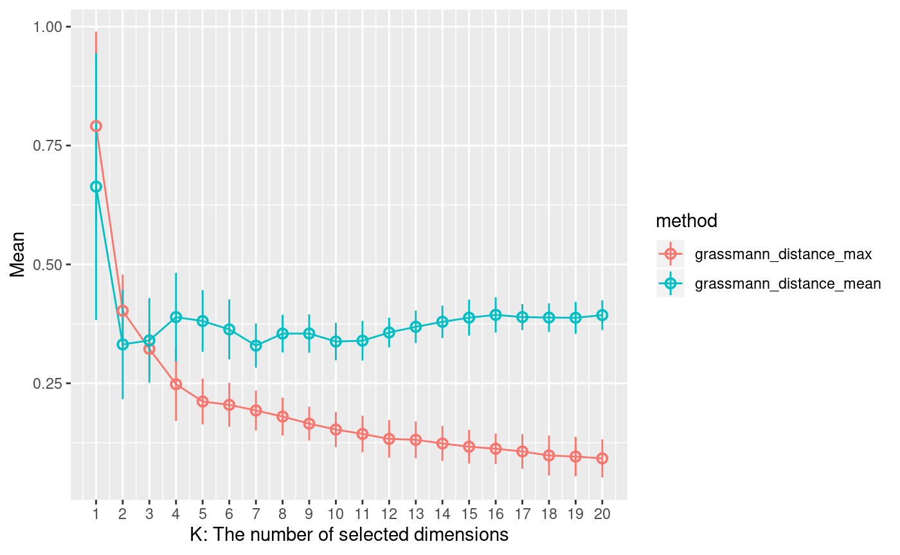

This document introduces how to use Treefit with Seurat. You need to perform pre-processing such as removing contaminations against the input data to improve precision. You can use Seurat for pre-processing.
In this document, you analyze the dataset of Trapnell el al., 2014, Nature Biotechnology with Treefit. Their paper describes the details of the dataset. The dataset was collected to research the process of the differentiation and maturation of human myoblasts. The dataset fits to bifurcation model, not linear model. Because there are cells that differentiate to not muscle cells.
You need to load the dataset. dynverse provides the dataset that can be loaded by readRDS(). You can download the dataset from https://zenodo.org/record/1443566 .
trapnell.path <- "myoblast-differentiation_trapnell.rds"
if (!file.exists(trapnell.path)) {
download.file("https://zenodo.org/record/1443566/files/real/gold/myoblast-differentiation_trapnell.rds?download=1",
trapnell.path,
mode="wb")
}
trapnell.dynverse <- readRDS(trapnell.path)You can pre-process the dataset by Seurat.
You need to create a Seurat object to pre-process. You need to transpose the loaded dataset provided by dynverse to create Seurat object. Because dynverse uses rows are cells and columns are genes format but Seurat object uses rows are genes and columns are cells format.
You can pre-process by specifying some parameters to create Seurat object. In this document, you perform the following pre-processing:
trapnell <- Seurat::CreateSeuratObject(counts=t(trapnell.dynverse$count),
min.cells=3,
min.features=200)## Warning: Feature names cannot have underscores ('_'), replacing with dashes
## ('-')You can estimate quantitative tree-likeness of the dataset pro-processed by Seurta.
You can use treefit::estimate() to estimate tree-likeness:
## k method mean standard_deviation
## 1 1 grassmann_distance_max 0.7908482 0.19863229
## 2 1 grassmann_distance_mean 0.6634866 0.28044669
## 3 2 grassmann_distance_max 0.4024010 0.07624083
## 4 2 grassmann_distance_mean 0.3316872 0.11519797
## 5 3 grassmann_distance_max 0.3222359 0.05763355
## 6 3 grassmann_distance_mean 0.3401627 0.08899357The estimated result is a data.frame. The following points should be focused:
mean and standard_deviation column values when method column value is "grassman_distance_max" (Grassmann distance max case)k, mean and standard_deviation column values when method column value is "grassman_distance_mean" (Grassmann distance mean case)In the Grassmann distance max case, the smaller values in the mean and standadard_deviation columns, the more tree-like the input data is.
In the Grassmann distance mean case, the k column value will relate to the number of the major cell lines when the mean column value is the smallest. The number of the major cell lines will be k + 1 of the case. For example, the k column value is 2 when the mean column value is the smallest, 3 = k(2) + 1 will be the number of the major cell lines.
You can confirm the above points by visualizing the estimated result. You can visualize by treefit::plot_estimated():

X-axis shows the k column values. Y-axis shows the mean column values. The standard_deviation column values are showed as error bar. The shorter error bar shows smaller the standard_deviation column value.
In the Grassmann distance max case, you need to confirm the values of the the mean and standard_deviation columns. The smallest mean column value is almost 0.1. The standard_deviation column value is almost 0 after the k column value is 5. It means that the dataset will be almost tree-like. It’s true because the dataset is known as a tree-like dataset.
In the Grassmann distance mean case, you need to confirm the k value when the mean column value is the smallest. It’s 2. It means that the number of the major cell lines will be 3 = 2 + 1. It’s true because the dataset fits to bifurcation model.